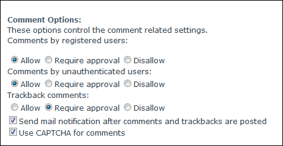

Managing Blog Comment Options
How to enable/disable and configure blog comments for a single blog on the Blog module. This can be performed by bloggers on their own blog and by Administrators on any blogs.
- Click the Blog Settings link on the New_Blog module - OR - Click the blog name on the Blog_List module and then select Edit Blog Settings from the View_Blog module actions menu. This opens the Edit Blog page.
- Go to the Comment Options section and set any of these options settings:
- At Approval for user comments required, if comments by authenticated users require approval before being published - OR - publish these comments without approval.
- At Comments by Registered Users, select for these options:
- Allow: Select to allow registered users to add comments. Comment approval isn't required.
- Require Approval: Select to allow registered users to add comments. Comments must be approved by the blog owner or an Administrator before they are displayed.
- Disallow: Select to disallow registered users from adding comments.
- At Comments by Unauthenticated Users, select for these options:
- Allow: Select to allow unauthenticated users to add comments. Comment approval isn't required.
- Require Approval: Select to allow unauthenticated users to add comments. Comments must be approved by the blog owner or an Administrator before they are displayed.
- Disallow: Select to disallow unauthenticated users from adding comments.
- At Trackback Comments, select for these options:
- Allow: Select to allow trackback comments. Comment approval isn't required.
- Require Approval: Select to allow trackback comments. Comments must be approved by the blog owner or an Administrator before they are displayed.
- Disallow: Select to disallow trackback comments.
- At Send mail notification after comment and trackbacks are posted, to enable email notification when comments and trackbacks are posted to this blog - OR - disable mail notification.
- At Use CAPTCHA for comments, to enable CAPTCHA - OR - disable.
-
Click the Update button.

Managing Blog Comment Options